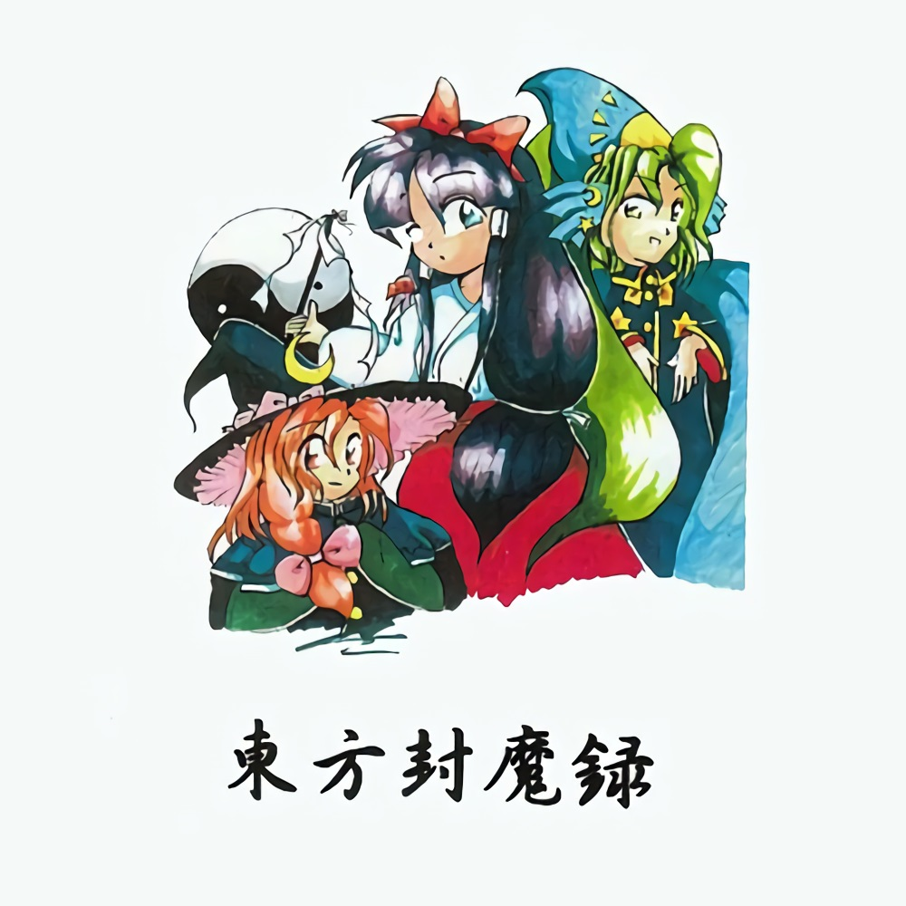
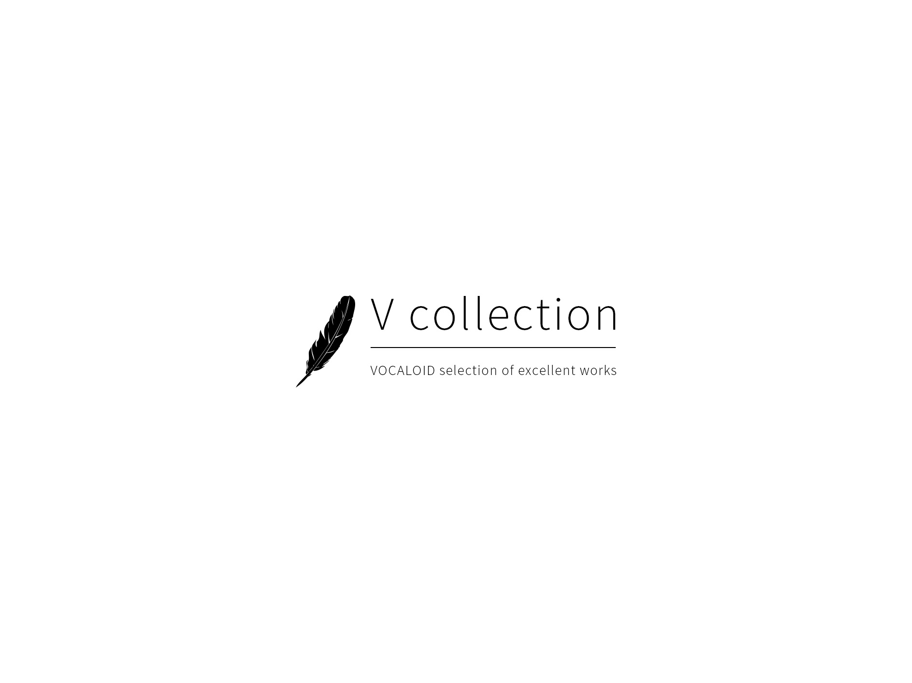
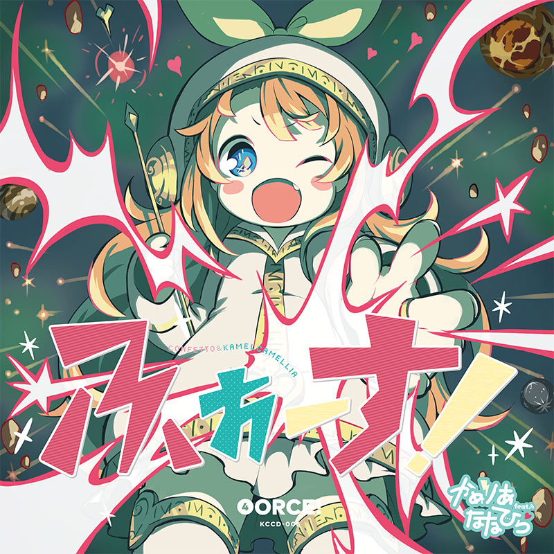

Yunomi参与制作的歌曲，但这次却不是Nicamoq演唱了，而是Yunomi专辑御用封面画师Kiato了 继续阅读
KOTONOHOUSE & Yunomi – マシュマロ・マキアート feat.くいしんぼあかちゃん
4
Yunomi参与制作的歌曲，但这次却不是Nicamoq演唱了，而是Yunomi专辑御用封面画师Kiato了 继续阅读

20年前的东方曲子了，稍微感受一下历史的氛围）
继续阅读
经过三个月的打磨，V collection系列的最新作“VITA（生命）”今天正式发布。
VITA作为时隔1年多的主线续作，曲风和前几部比起来偏向于柔和。首领是honeyworks的ノンファンタジー（必要不可欠）。

最近发现从niconico抽取的音频质量明显要高于youtube的，所以统一把之前来自youtube的歌曲给替换了一遍。要不要更新大家就自行斟酌吧。 继续阅读

今天来给大家呕血推荐这款号称“地表最强”的音游，信仰充值，就算为了它买ps4也值了。238首歌，每首都有pv，350多套时装，一天换一套，60帧1080p，专为萌豚打造（没错就是我）。
继续阅读

かめりあ＆ななひらのVSシリーズ第四弾！
洗脳力バツグン電波トラックや陶酔力ド級クラブチューンを収録、
強烈な重力で引きずり込まれること間違いなし！
そしてリミキサーには
超魔力タッグ”Lite Show Magic”＆
超強力タッグ”The 4th”!